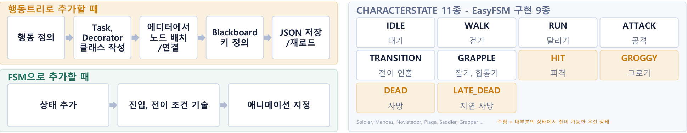

CASE 01
일정 안에 필요한 행동 패턴 수를 채우지 못하던 문제

문제
5인, 2개월 일정에서 몬스터 타입과 행동 패턴을 계속 늘려야 했는데, 남은 기간 안에 필요한 수를 채우기 어려웠습니다.
원인
행동트리는 행동 하나를 넣을 때 노드 클래스 작성, 에디터 배치, 블랙보드 키 정의가 모두 필요해 패턴 추가 속도가 일정을 따라가지 못했습니다.
선택
구조적 확장성과 남은 기간 중 후자를 우선했습니다. 이미 만든 행동트리는 유지하고, 이후 추가되는 몬스터는 FSM으로 구현하는 절충안을 택했습니다.
구현
상태를 열거형으로 정의하고 전이를 직접 기술하는 EasyFSM을 만들어, 몬스터별로 상속해 진입·전이·종료만 채우도록 했습니다.
검증
전환 이후의 주차별 패턴 추가 수를 기록해 목표 수량을 채웠는지 확인했습니다.
남은 한계
구조가 두 가지로 나뉘어 몬스터마다 코드를 읽는 방식이 달라졌습니다.